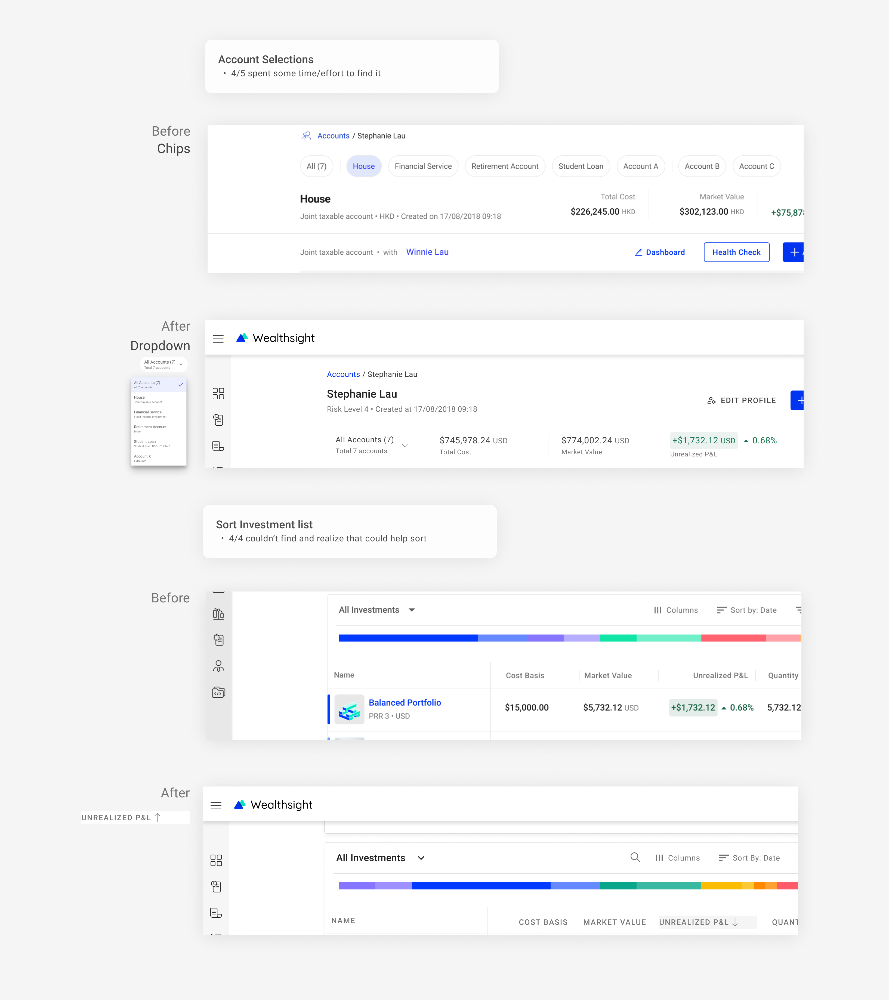
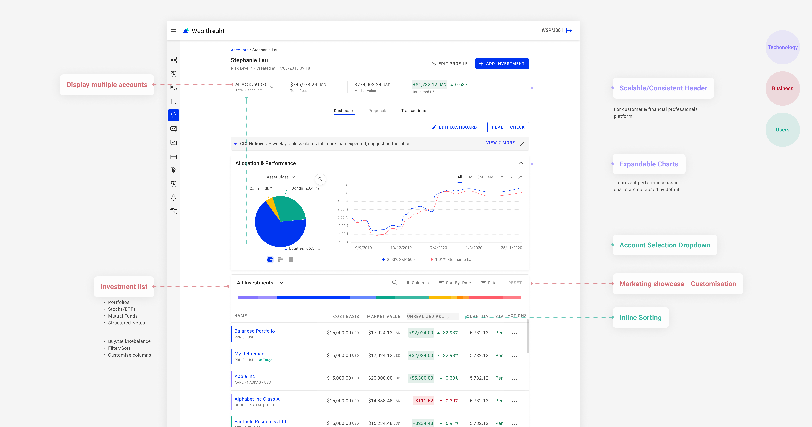

Intro
Portfolio managers, financial advisors and individual investors use the user account dashboard to review their investment performance, portfolio allocation and add/manage portfolios.
1. Challenges & Opportunities
Multi-faced requirements
// Incorprate multi-faced requirements from clients, business value, user experience and technical strategy perspectives.
// Define a shared design pattern that fit into three different journeys: portfolio management tool, financial advisor and customers.
One pattern for customers & professionals
// It is challenging for three designers to agree on one design pattern. Because enterprise users and customers can have totally different goals and focus, this could lead to opposite designs. E.g. to show or hide certain features depends on the frequency of use.
2. Audit products Workshop & Desktop research
With the design team, I lauched desktop research and workshop to extract the common modules that all customer, advisor tool and management tools have. Based on the result, we’re able to define what structure and modules to have in the first fold of the screen, and documented the differences between customer and investment professional tools.
3. Solution & Prototype

4. Usability Testing
To make sure there’s no basic usability problems within short period of time, I ran cognitive walkthrough with 5 collegues to find out how easy it is for user to complete the pre-defined tasks with the concept design.
5. Refined Design
Create concept design and prototypes to validate our ideas.
6. Constraints & Alternative
Unable to define use scenarios without thoroughly analysis of first-hand data at early stage --> what information to include?
--> Desktop research
Introduced new design patterns, might be hard to anticipate most technical issues that may need design update
--> Be open to design iterations
Not able to solidly validate design with real target users
--> cognitive walkthrough